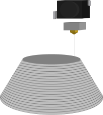
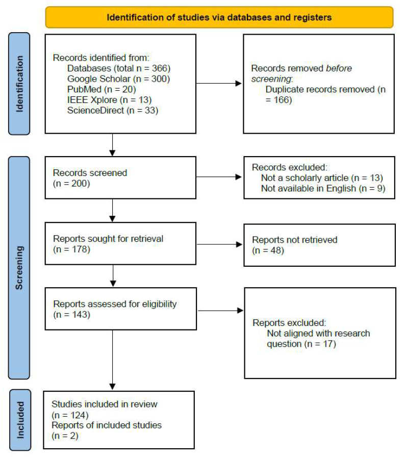
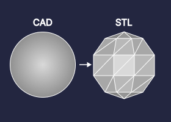
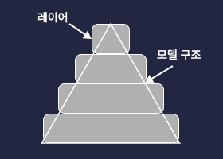
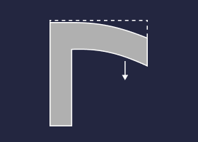
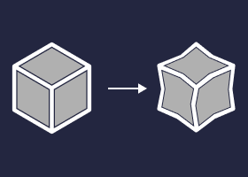
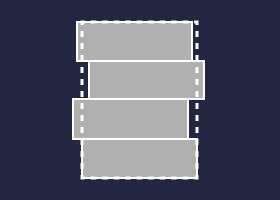
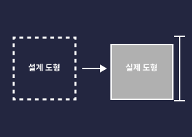
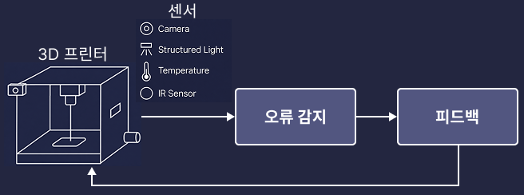

VR 학습 콘텐츠 개발 및 안내 방식 효과 분석
and Effects of Guidance Methods
디지털 모델을 기반으로 재료를 층층이 적층하여 3차원 형상을 제작하는 기술. 플라스틱·금속·세라믹·그래핀 등 다양한 재료를 활용해 복잡한 구조를 비교적 빠른 시간 내에 생산할 수 있으며, 기존 절삭 가공과 달리 재료 낭비가 적고 맞춤형 제작이 용이하다 (Wong & Hernandez, 2012; Low et al., 2017).

표 1. 적층제조 공정의 분류와 각 공정의 정의 및 예시 (ISO/ASTM 52900, 2015)
| 공정 | 정의 | 예시 기술 |
|---|---|---|
| Binder Jetting (BJ) | 액체 결합제가 분말 재료를 결합하기 위해 선택적으로 분사됨 | ExOne, ZPrinting, VoxelJet |
| Directed Energy Deposition (DED) | 재료가 적층되는 동안 집중된 열에너지로 재료를 용융시킴 | LENS, WAAM, EBAM |
| ★ Material Extrusion (ME) | 재료가 노즐 또는 오리피스를 통해 선택적으로 압출됨 → 본 연구 대상 공정 |
FDM/FFF, Contour Crafting |
| Material Jetting (MJ) | 원료 재료의 액적이 선택적으로 분사됨 | PolyJet, MJP, NPJ |
| Powder Bed Fusion (PBF) | 열에너지가 분말 베드의 특정 영역을 선택적으로 융합시킴 | SLS, SLM, DMLS, EBM |
| Sheet Lamination (SHL) | 재료 시트가 결합되어 하나의 부품을 형성함 | LOM, CBAM |
| Vat Photopolymerization (VPP) | 액조 내의 액상 광중합체가 광활성 중합 반응을 통해 선택적으로 경화됨 | SLA, DLP, CLIP |
1984년 Chuck Hull에 의해 광경화 방식의 적층제조 장치가 최초로 상용화된 이후 (Hull, 1986), 3D 프린팅은 복잡한 형상의 제품을 신속하고 경제적으로 생산한다는 강점을 바탕으로 현대 제조업의 핵심 기술로 자리매김했다.
2023년 기준 시장 가치는 200억 달러를 초과하였으며, 연간 11.1% 성장을 기록했다. 프린터 속도 향상과 재료비 절감에 대한 기대와 함께 대량 생산 분야로의 적용 확대 가능성이 높아지고 있다 (Paľovčík et al., 2024).

출처: Wohlers Report 2024
자동차
경량 부품 시제품 제작 및 맞춤형 부품 생산. 설계 검증 비용과 개발 기간을 대폭 단축 (Vido et al., 2024).
항공우주
복잡한 내부 구조를 가진 경량 부품 제작. 기존 가공법으로 불가능한 형상 구현 및 연료 효율 개선 (Joshi & Sheikh, 2015).
의료
맞춤형 보조기기·의수족·치과 보철물 제작. 수술 전 시뮬레이션용 장기 모형 출력 (Goyanes et al., 2016; Kupfer et al., 2020).
교육
설계·제작 전 과정 직접 체험으로 실천적 학습 촉진. 창의성·비판적 사고·문제해결력 함양 (Trust & Maloy, 2017; Ozeren et al., 2023).
3D 프린팅은 CAD 모델링부터 슬라이싱, 출력 실행까지 다양한 공정 변수가 맞물려 작동하기 때문에, 숙련자에게도 크고 작은 출력 오류가 빈번하게 발생한다. 출력 품질 저하, 구조 붕괴, 표면 불량 등은 시간과 재료 손실로 직결되며, 특히 초보 학습자는 오류의 원인을 파악하고 적절히 대처하는 것 자체가 높은 인지 부하를 요구한다.
Under/Over-Extrusion, Stringing, Clogged Extruder, Grinding Filament 등 — 재료 공급량이나 노즐 상태에 따라 발생하는 가장 흔한 오류군
Layer Shifting, Layer Separation, Warping, Poor Bridging 등 — 적층 과정의 열적·기계적 변수 불안정으로 인한 구조적 결함
Blobs & Zits, Scars on Top Surface, Lines on Side, Vibrations & Ringing 등 — 출력물 외관 품질에 영향을 주는 오류
Not Sticking to Bed, Curling, Gaps in Floor Corners 등 — 첫 레이어 안착 실패로 인해 출력 전체가 실패로 이어지는 오류
시간적 제약
- 소형 모델도 출력 완료까지 수십 분~수 시간 소요
- 오류 발생 시 처음부터 재출력 필요
- 반복 실습이 구조적으로 어려움
공간적 제약
- 메이커스페이스 등 전용 공간 확보 필수
- 장비 수 대비 학습자 수 불균형 → 동시 실습 한계
- 접근성 문제로 자율적 반복 학습 불가
비용적 제약
- 보급형 장비도 수십만 원 이상의 초기 비용 발생
- 필라멘트 등 소모성 재료 비용이 반복 실습 시 누적
- 출력 실패 시 재료·전력 손실이 경제적 부담으로 이어짐
이러한 제약을 보완할 대안적 학습 환경으로 가상현실(VR) 기술이 주목받고 있음. VR은 실제 장비나 재료를 사용하지 않고도 학습자가 공정 전반을 반복적으로 체험할 수 있도록 지원하며, 다양한 교육 분야에서 학습자의 이해도와 돌발 대처 능력을 높이는 효과가 입증되어 왔음.
3D 프린팅 과정에서 초보 학습자가 경험하는 오류와 트러블슈팅 문제를 체계적으로 정리하고, 이를 가상현실 기반 학습 콘텐츠로 구현한 뒤, 콘텐츠 내 안내 방식의 효과를 비교하는 것을 목적으로 함.
PRISMA 기반 3D 프린팅 오류 및 해결 전략 체계화
3D 프린팅 과정에서 반복적으로 나타나는 오류 유형과 해결 전략을 PRISMA 지침에 따라 체계적으로 문헌고찰하여 분류·정리함.
VR 기반 3D 프린팅 학습 콘텐츠 개발 및 사용성 평가
Study 1의 문헌고찰 결과를 반영해 초보 학습자 대상의 VR 기반 학습 콘텐츠를 개발하고, 예비 사용성 평가를 통해 콘텐츠의 완성도를 검증함.
안내 방식에 따른 학습 경험 비교 검증
텍스트 기반 가이드와 AI 에이전트 가이드를 2×2 혼합요인설계로 비교하여, 안내 방식이 프레즌스·사용성·작업부하에 미치는 영향을 실험적으로 검증함.
슬라이싱 과정에서 레이어 두께, 적층 속도, 출력 온도, 지지대 생성 여부 등 다양한 파라미터가 설정되며, 이러한 복합 변수가 출력 안정성과 품질에 직결됨.
시스템이나 작업 과정에서 발생한 오류나 비정상적 상태를 확인하고, 그 원인을 진단한 뒤 적절한 조치를 통해 문제를 해결하는 일련의 문제해결 과정 (Jonassen & Hung, 2006). 특히 비전문가·초보자는 외부 모델을 다운로드하여 활용하는 경우가 많아 슬라이싱 설정 오류가 빈번.
지지대의 역할
오버행(overhang)이나 브리지(bridge) 구조와 같이 공중에 떠 있는 형상을 안정적으로 출력하기 위해 임시로 생성되는 구조물. 출력 안정성 향상 및 구조 붕괴 방지 역할.
지지대 과다/부족의 문제
- 과도한 지지대 → 재료 낭비, 후처리 부담 증가
- 불충분한 지지대 → 구조 붕괴, 출력 실패
- 초보자는 판단 자체가 어려움
- 프레즌스(Presence) — 가상환경에 실제로 존재한다는 심리적 몰입
- 몰입(Immersion) — 3D 기반 가상환경 내 집중 경험
- 상호작용성(Interactivity) — 즉각적인 환경 반응
몰입 수준에 따른 분류
본 연구: Oculus Quest 2 활용 완전 몰입형 VR
- 안전교육: 실제 상황 재현 → 학습자 이해도·반응속도 향상
- 진로교육: 자기 이해·진로 태도 개선
- 언어학습: 언어 불안감 감소, 회화 능력 향상
- 의료 시뮬레이션: 실습 능력 향상
- 과학 콘텐츠: 공간감각 향상
Mathur et al.(2023)은 적층제조 교육을 위한 VR 기반 몰입형 프레임워크를 제안하였으나, 전문가 수준 대상으로 설계되어 초보 학습자 접근에 한계 존재. 본 연구는 초보 학습자가 접근 가능한 VR 기반 3D 프린팅 콘텐츠를 개발하여 이 공백을 채우고자 함.
📄 텍스트 기반 가이드
- 사전 설계된 순차적 절차 안내
- 외재적 부하 감소, 스키마 형성 촉진
- 초보자에게 안정적 학습 환경 제공
- 한계: 맥락·상황에 유연한 대응 어려움
🤖 AI 에이전트 가이드
- 학습자 반응에 따라 설명 조정 가능
- 음성·제스처·표정 등 사회적 단서 활용
- 실시간 피드백으로 부담 완화 기대
- 한계: 과도한 자극 시 인지 부하 증가 우려
프레즌스 (Presence)
가상환경에 실제로 존재한다고 느끼는 주관적 경험. Schubert et al.(2001) 척도 재구성, 16문항, 5점 척도. α = .95
시스템 사용성 (SUS)
Brooke(1996) 개발 표준 도구. 10문항, 0~100점. 68점 이상 = 수용 가능. α = .85
작업부하 (NASA-TLX)
Hart & Staveland(1988) 개발. 6개 하위 차원으로 인지적 부담 측정.
- 정신적 요구 (Mental Demand)
- 신체적 요구 (Physical Demand)
- 시간적 요구 (Temporal Demand)
- 수행 수준 (Performance)
- 노력 (Effort)
- 좌절감 (Frustration)
검색 데이터베이스
- Google Scholar
- ScienceDirect
- PubMed
- IEEE Xplore
검색 기간
- 2000년 1월 1일 ~ 2024년 7월 31일
키워드 조합 로직
AM 관련 조건
"3D printing"
OR "3D printer"
OR "additive manufacturing"
Problem 관련 조건
"error(s)"
OR "guideline(s)"
OR "troubleshooting"
PRISMA 흐름도에 따라 문헌을 선정했으며, 모든 선별 과정은 자동화 도구 없이 수작업으로 수행함.
✅ 포함 기준
- 3D 프린팅의 기술적·방법론적 측면에 초점을 둔 연구
- 학술 논문 (실험 연구, 리뷰 논문, 사례 연구 포함)
- 문제 해결 방안을 구체적으로 제시한 연구
❌ 제외 기준
- 중복 문헌
- 학술 논문 형식이 아닌 문서 (도서, 보고서 등)
- 영어로 작성되지 않은 논문
- 원문 접근이 불가능한 연구
- 연구 문제와 부합하지 않는 연구

연구 선택 과정의 PRISMA 흐름도
추출 항목
- 연구 제목, 출판 연도, 연구 목적
- 3D 프린팅 과정에서 발생한 주요 문제
- 문제에 대응하는 해결 방안
분석 중점
- 출력 오류, 품질 저하, 기계적 고장 등 반복적 문제 유형 식별
- 구조화된 코딩으로 문제 유형·해결 방안 일관 분류
- 유사 연구 비교 분석을 통한 결과 간 일관성 평가
- 기존 연구의 한계 및 후속 연구 방향 종합
① 설계 및 전처리 단계의 오류

CAD → STL 변환 오류
CAD 모델을 삼각형 메시로 구성된 STL 파일로 변환하는 과정에서 기하학적 형상이 완전히 보존되지 않아 형상 왜곡 발생

슬라이싱 파라미터 오류
STL → G-code 변환 시 레이어 두께 등 파라미터 설정에 따라 곡면이 계단처럼 표현되는 Stair-step effect 발생

적층 방향·Overhang 오류
지지대 없이 공중에 뜬 구조(overhang)를 출력할 경우 구조물이 처지거나 무너지며, 심할 경우 출력 전체가 실패함
② 기하학적 오차 및 치수 편차
환자 맞춤형 보철물·임플란트 등 치수 정밀도가 요구되는 의료 분야에서 특히 중요하게 다뤄지는 오류 유형으로, 설계 치수와 실제 출력물 간의 편차가 발생한다. 주요 원인은 다음과 같다.

냉각 시 수축·뒤틀림
출력 재료가 냉각되는 과정에서 수축이 발생하고, 잔류 응력으로 인해 출력물이 뒤틀리며 치수 편차 발생

진동·정렬 불량
프린터 장비의 진동이나 노즐·베드의 미세한 정렬 불량으로 레이어 간 위치 오차가 누적되어 치수 편차가 발생

공정 변수 불안정성
ME의 압출 온도·속도, PBF의 레이저 출력·스캔 속도 등 다양한 공정 변수가 불안정할 경우 설계 치수와 실제 출력 간 편차가 발생
③ 공정 중 오류 탐지 및 대응의 실패
- 적층제조는 수 시간 동안 연속 운용되며, 온도 변동·진동·부품 마모가 출력 품질에 실시간 영향을 미침.
- 초기 설정이 정밀해도 출력 중 예기치 못한 변수로 출력 실패가 발생할 수 있으며, 장시간 출력에서 위험이 커짐.

* 소프트웨어 기반 알고리즘 해결책이 전체적으로 가장 많이 연구됨
| 오류 범주 | 소프트웨어 기반 | 하드웨어 기반 | 사용자 제어 |
|---|---|---|---|
| 설계 및 전처리 | 적응형 슬라이싱, AI 설계 도구 | — | DfAM, 방향 최적화 |
| 기하학적 오차 | 보정 알고리즘, ML 예측 | 가열 챔버, 폐루프 제어 | 파라미터 가이드라인 |
| 공정 중 탐지 | 머신러닝, 신경망 탐지 | 카메라, 열화상, 진동 센서 | — |
PRISMA 기반 문헌고찰 결과, 3D 프린팅 오류는 ① 설계 및 전처리 오류, ② 기하학적 오차 및 치수 편차, ③ 공정 중 오류 탐지 및 대응 실패로 수렴하였다. 이는 출력 실패가 단일 원인보다 출력 전 준비, 실제 출력 조건, 실시간 모니터링의 연결 구조 안에서 발생한다는 점을 보여준다.
① 설계 및 전처리 오류
결과 해석
CAD-STL 변환, 슬라이싱, 적층 방향, 지지대 판단 오류는 출력 이전에 발생하지만 이후 공정 전체로 누적된다. 특히 곡면 왜곡, 계단 현상, 오버행 변형은 출력 후 수정이 어렵기 때문에 사전 예방형 오류로 해석된다.
해결 방향
- DfAM 기반 설계 체크리스트와 출력 전 검증
- 고해상도 Mesh, 적응형 슬라이싱, G-code 품질 점검
- 출력 방향 및 지지대 자동 추천 가이드 제공
② 기하학적 오차 및 치수 편차
결과 해석
치수 편차는 열수축, 잔류응력, 진동, 정렬 불량, 공정 변수 불안정성이 복합적으로 작용한 결과이다. 따라서 단순한 파라미터 조정만으로는 한계가 있으며, 공정 전반의 품질 관리 문제로 보아야 한다.
해결 방향
- 수축을 고려한 설계 보정 및 형상 보정 알고리즘
- 3D 스캐닝 기반 출력 후 검증과 장비 보정
- ML 기반 변형 예측, 파라미터 최적화, 폐루프 제어(실시간 자동 보정)
③ 공정 중 오류 탐지 및 대응 실패
결과 해석
장시간 연속 출력에서는 층간 적층 오류, 압출 불균형, 진동, 정렬 이상이 실시간으로 누적될 수 있다. 오류 위치와 특성을 늦게 파악하면 재료 낭비와 품질 저하가 커지므로 조기 탐지와 즉각 대응이 핵심이다.
해결 방향
- 카메라, 열화상, 진동 센서 기반 실시간 모니터링
- 다중 센서 데이터와 신경망 기반 이상 탐지
- 자동 보정, 출력 중지, 사용자 알림을 결합한 피드백 체계
④ 해결 접근법의 분포와 시사점
결과 해석
문헌에서는 소프트웨어 기반 알고리즘이 가장 두드러졌고, 하드웨어 시스템과 사용자 제어 전략은 문제 범주에 따라 선택적으로 활용되었다. 이는 오류 해결이 예측, 보정, 실시간 제어, 사용자 판단 지원을 통합하는 방향으로 이동하고 있음을 의미한다.
교육적 적용
- 오류 원인과 해결 절차를 VR 시나리오로 구조화
- 초보자가 사전 점검, 설정 조정, 후처리를 단계별로 연습
- 기술적 트러블슈팅을 학습 경험 설계의 핵심 내용으로 전환
개발 환경
- 개발 엔진: Unity
- HMD 기기: Oculus Quest 2
개발 절차
관찰 및 체험
작업 흐름 구현
안내 체계 구현
직접 모델링 대신 온라인 플랫폼 Thingiverse에서 모델 다운로드
초보자가 복잡한 모델링 과정 없이 출력에 필요한 파일을 획득할 수 있도록 접근성 고려
실제 메이커스페이스 사용 소프트웨어 Cubicreator 적용
복잡한 슬라이싱 절차 전체를 녹화·편집하여 비디오 자료로 제공 → 단계별 자막으로 학습 부담 완화
실제 3D 프린터와 동일한 UI를 직접 인터랙션
가상 공간 내 안내를 따라 출력 절차 진행 → 개념 이해를 넘어 실제 작업 흐름 경험
지지대 없음
슬라이싱 단계에서 모델 방향 조정 → 지지대 없이 안정 출력
지지대 있음
출력 후 지지대 제거 인터랙션 → 후처리 트러블슈팅 경험
(5점 만점)
(5점 만점)
(기준: 68점)
프레즌스
플로우
SUS
USB 오브젝트 획득·이동, 프린터 UI 확인, 지지대 분리 등 실제 3D 프린팅 작업의 행동 흐름을 가상 환경에서 모사한 요소들이 학습자가 콘텐츠 내부에 존재한다고 느끼는 프레즌스를 높이는 데 기여한 것으로 해석됨.
시작화면 → 모델 다운로드 → 슬라이싱 → 출력 → 후처리로 이어지는 순차적 구조가 학습 흐름 추적을 가능하게 함. 단순 수동적 정보 수용이 아닌 직접 오브젝트를 선택·이동·삽입하는 방식의 상호작용이 플로우를 유발.
- 복잡한 모델링 작업 대신 정해진 모델 다운로드로 단순화하여, 3D 프린팅 공정 흐름과 핵심 문제 상황에 집중 가능
- 슬라이싱 단계를 동영상으로 제공하고 단계별 자막을 활용하여, 복잡한 파라미터 설정의 학습 부담 완화
- 실제 장비 없이도 출력 오류와 후처리 과정을 안전하게 간접 학습할 수 있어, 물리적·경제적 부담 없이 반복 체험 가능
이러한 설계 요소들이 복합적으로 작용하여 VR이 3D 프린팅의 절차적 학습과 문제 상황 이해를 지원하는 효과적인 입문 학습 환경으로 기능할 수 있음.
참여자
측정 도구
프레즌스
16문항 · 5점 척도 · 신뢰도 α = .95
시스템 사용성 (SUS)
10문항 · 0~100점 · 신뢰도 α = .85
작업부하 (NASA-TLX)
6개 하위 차원 · 인지적 부담 측정
독립변인 1 · 안내 방식 (참여자 간 요인)
📄 텍스트 기반 가이드
- 패널 형태로 단계별 안내문 제공
- 동일한 순서·동일한 양의 정보
- 모든 참여자에게 사전 설계된 절차 제공
🤖 AI 에이전트 가이드
- Convai(Unity Asset Store) 활용
- 각 공간에 배치, 언제든 질문 가능
- 립싱크·표정·행동으로 풍부한 상호작용
독립변인 2 · 출력물 지지대 유무 (참여자 내 요인)
🟢 지지대 없음
- 슬라이싱 과정에서 적층 방향 조정
- 지지대 없이 안정적 출력 수행
🟡 지지대 있음
- 슬라이싱 과정에서 지지대 활성화
- 출력 이후 지지대 제거(후처리) 포함
2 × 2 혼합요인설계
안내 방식(텍스트·AI) × 지지대 유무(없음·있음). 안내 방식은 무작위 배정, 지지대 유무 순서는 역균형화로 순서 효과 통제.
전체 실험 소요 시간
사전 안내 + VR 체험 × 2조건 + 설문 응답
실험 절차 흐름
📋
사전 안내
전체 절차·HMD 착용·조작법 안내, 무작위 조건 배정
🥽
VR 입장
배정된 안내 방식으로 가상현실 입장
🖨️
3D 프린팅 체험 (× 2조건)
모델 다운로드 → 슬라이싱 → 출력 → 결과 확인
(지지대 있음 조건: 후처리 포함)
📝
설문 응답
각 조건 체험 직후 프레즌스·SUS·NASA-TLX 응답
혼합설계 반복측정 ANOVA 결과, 안내 방식(텍스트 기반 가이드 vs. AI 에이전트 가이드)과 지지대 유무는 프레즌스와 사용성 평가를 유의하게 변화시키지 않았다. 전체 작업부하 역시 유의한 차이는 없었으나, 하위 차원에서는 Performance와 Effort에서 부분적 차이가 확인됨.
상호작용 효과 비유의
[F(1, 28) = .89, p > .05, ηp² = .03]
상호작용 효과 비유의
[F(1, 28) = .77, p > .05, ηp² = .03]
상호작용 효과 비유의
[F(1, 28) = 1.99, p > .05, ηp² = .07]
Performance는 상호작용 효과가 유의함 [F(1, 28) = 4.20, p < .05, ηp² = .13].
Effort는 안내 방식 주효과가 유의함 [F(1, 28) = 7.19, p < .05, ηp² = .20].
Performance: 지지대가 있는 텍스트 기반 가이드 조건이 가장 높았고(M = 4.80), 지지대가 있는 AI 에이전트 조건이 가장 낮았다(M = 4.27). 복잡한 지지대 상황에서 단계별 절차가 명확한 텍스트 가이드가 수행 확신을 높였을 가능성.
Effort: 텍스트 기반 가이드(M = 2.97)보다 AI 에이전트 가이드(M = 2.07)가 낮아, AI 에이전트가 주관적 노력 부담을 줄였을 가능성.
텍스트 기반 가이드의 프레즌스 평균은 4.59점(SD = .55), AI 에이전트 가이드는 4.44점(SD = .54)으로 모두 중립 기준값인 3점보다 유의하게 높았다.
t(29) = 15.83, p < .001 / t(29) = 14.71, p < .001
사용성 평가는 텍스트 기반 가이드 78.17점(SD = 13.06), AI 에이전트 가이드 76.50점(SD = 15.79)으로 나타났다. 두 조건 모두 수용 가능한 사용성 기준인 68점을 상회하였다.
두 안내 방식 모두 사용자가 콘텐츠를 수용 가능한 수준 이상으로 이용할 수 있음을 보여줌.
전체 작업부하는 텍스트 기반 가이드 1.77점(SD = .38), AI 에이전트 가이드 1.64점(SD = .46)으로 모두 기준값 3점보다 유의하게 낮았다. 즉, 두 안내 방식 모두 과도한 부담 없이 이용 가능한 수준으로 설계되었다.
t(29) = -17.62, p < .001 / t(29) = -16.11, p < .001
안내 방식과 지지대 유무는 프레즌스와 사용성에서 유의한 차이를 보이지 않았으나, 두 안내 방식 모두 기준값을 유의하게 상회함. 즉, 텍스트 기반·AI 에이전트 안내 모두 VR 교육 콘텐츠 안내 방식으로 활용 가능함을 의미.
AI 에이전트가 학습자의 절차적 이해를 보조하여 콘텐츠 이용에 필요한 주관적 노력 수준을 낮춤. 긴 텍스트 해석 부담 감소.
초보 학습자가 무엇을 질문해야 할지 모르고 개방형 상호작용을 충분히 활용하지 못했을 가능성. 능동적 탐색 대신 수동적 이용.
- 지지대가 있는(복잡한) 상황에서 텍스트 기반 가이드가 더 높은 수행 확신을 제공
- 인지부하이론으로 해석하면, AI 에이전트의 개방형 구조가 초보자에게 외재적 부하로 작용했을 가능성
- 사전 설계된 순차 안내가 복잡한 문제 상황에서 심리적 안정감 제공에 유리
3D 프린팅 기술의 교육적 활용 가능성을 높이기 위해, 출력 실패와 트러블슈팅 문제를 체계적으로 이해하고 이를 초보 학습자가 경험적으로 학습할 수 있는 VR 기반 교육 환경으로 구현하고자 함
Study 1: PRISMA 기반 3D 프린팅 오류 및 해결 전략 체계화
- 3D 프린팅 실패의 주요 원인과 해결 전략을 분석 (설계 및 전처리 단계의 오류 / 기하학적 오차 및 치수 편차 / 공정 중 오류 탐지 및 대응의 실패)
- 3D 프린팅의 실패는 여러 단계에서 연쇄적으로 발생할 수 있음
- 출력 실패가 발생하는 구조와 원리를 학습자가 이해할 수 있도록 돕는 교육적 접근이 필요함
Study 2: 가상현실 기반 3D 프린팅 학습 콘텐츠 개발
- Study 1에서 도출된 3D 프린팅 오류 및 트러블슈팅 논의를 바탕으로, 초보 학습자를 위한 VR 기반 3D 프린팅 학습 콘텐츠를 개발
- 학습자는 실제 장비나 재료를 사용하지 않고도 지지대가 필요한 상황과 지지대를 최소화할 수 있는 상황을 비교하며 경험할 수 있음
- 파일럿 테스트 결과 프레즌스와 플로우는 높은 수준으로 나타났으며, SUS 점수 역시 수용 가능한 사용성 기준을 상회함
Study 3: 텍스트 가이드와 AI 에이전트 가이드의 효과 비교
- Study 2에서 개발된 VR 기반 3D 프린팅 학습 콘텐츠를 바탕으로, 텍스트 기반 가이드와 AI 에이전트 가이드 및 지지대 유무에 따라 학습자의 프레즌스, 사용성, 작업부하에 미치는 영향을 분석
- 안내 방식과 지지대 유무는 프레즌스와 사용성 평가에서 통계적으로 유의한 차이 없음, 단 두 조건 모두 기준값보다 높게 나타남
- AI 에이전트 가이드는 Effort를 낮추는 경향을 보였으나, Performance 요인에서는 문제 상황에서 텍스트 기반 가이드가 더 높은 수행 확신을 제공할 가능성이 나타남. 초보 학습자에게 AI 에이전트의 개방형 상호작용이 항상 효과적으로 작동하는 것은 아니며, 일정 수준의 구조화된 안내가 함께 제공될 필요가 있음
- 3D 프린팅 실패를 기술적 결함이 아닌 교육 내용으로 재구성한 관점 제시
- 문헌 기반 문제 분석 ↔ 교육 콘텐츠 개발을 연결하는 연구 흐름 제시
- AI 에이전트 기반 안내 방식의 교육적 효과를 VR 맥락에서 실증적으로 검토
- 초보 학습자가 실제 장비 사용 전 안전하게 절차·트러블슈팅을 경험하는 VR 환경의 가능성 제시
한계점
- 참여자 30명의 소규모 표본
- 단일 대학교 학부생으로 한정
- 하드웨어 기반 트러블슈팅 미포함
향후 연구 방향
- 더 많은 참여자 대상 학습 효과 검증
- 구조화 안내+AI 에이전트 혼합 방식 탐색
- 실제 장비 사용 전·후 비교 연구